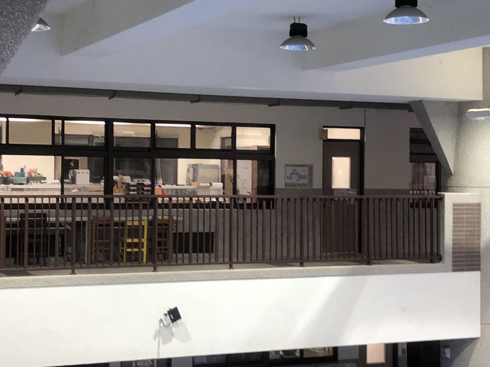
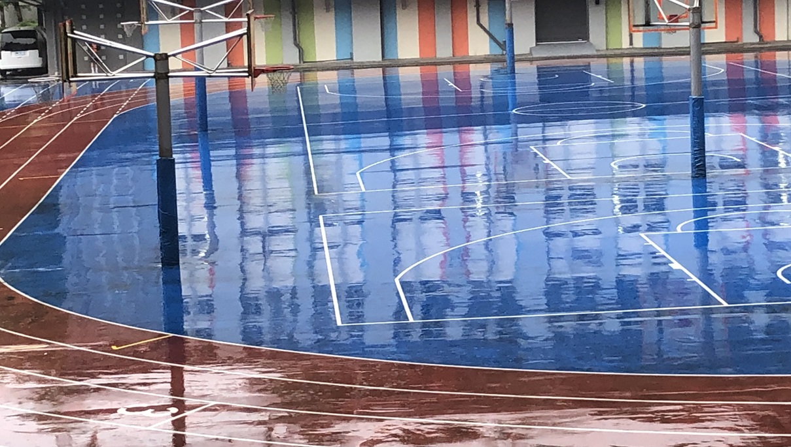
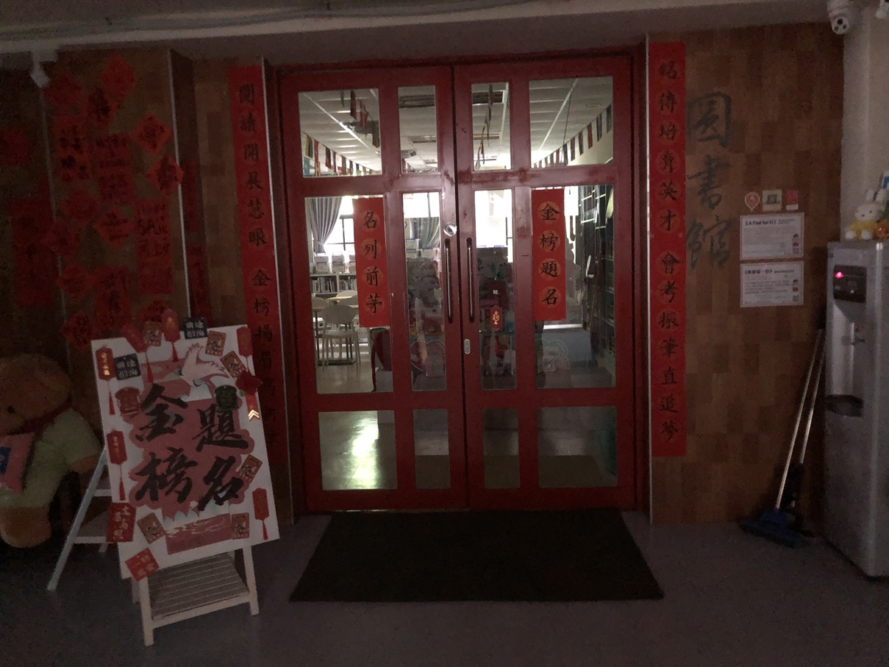
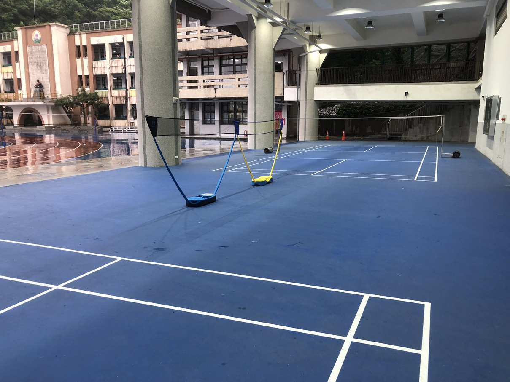
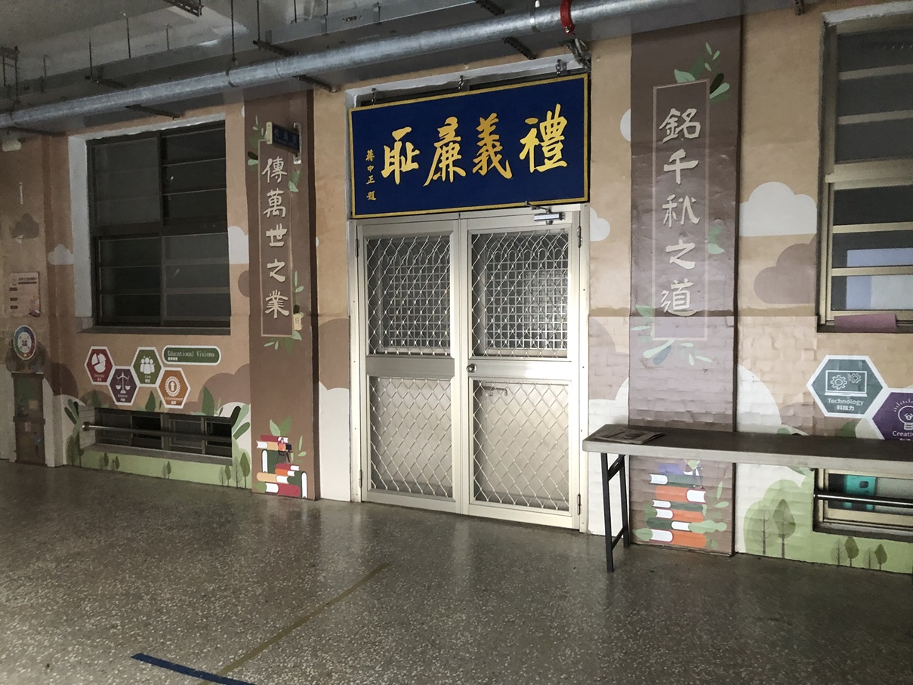
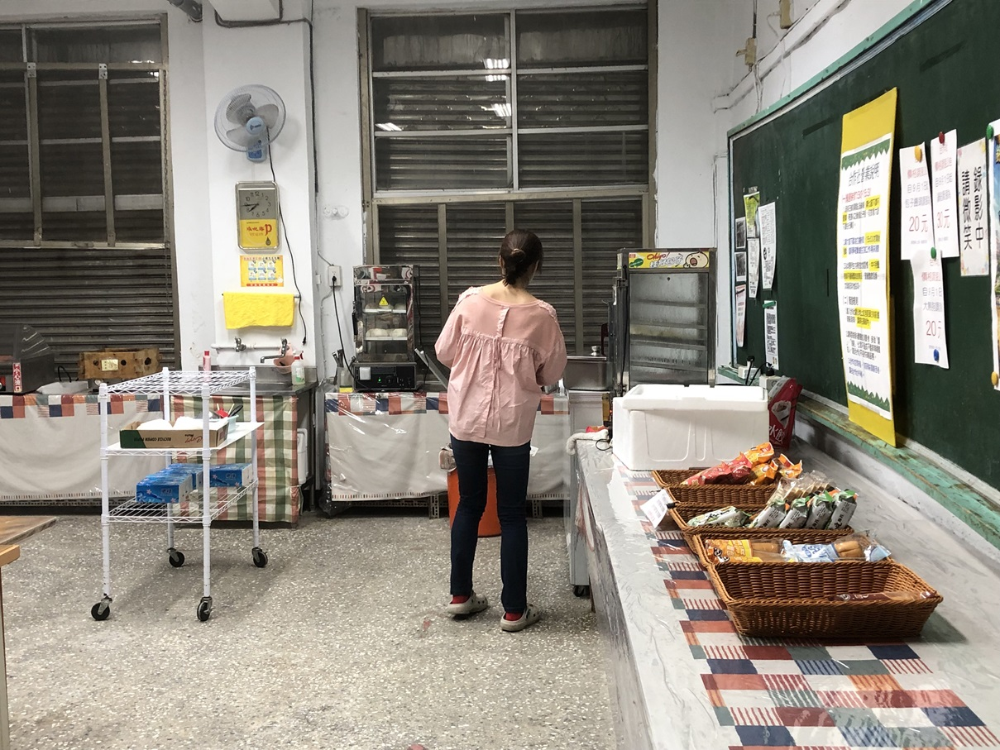
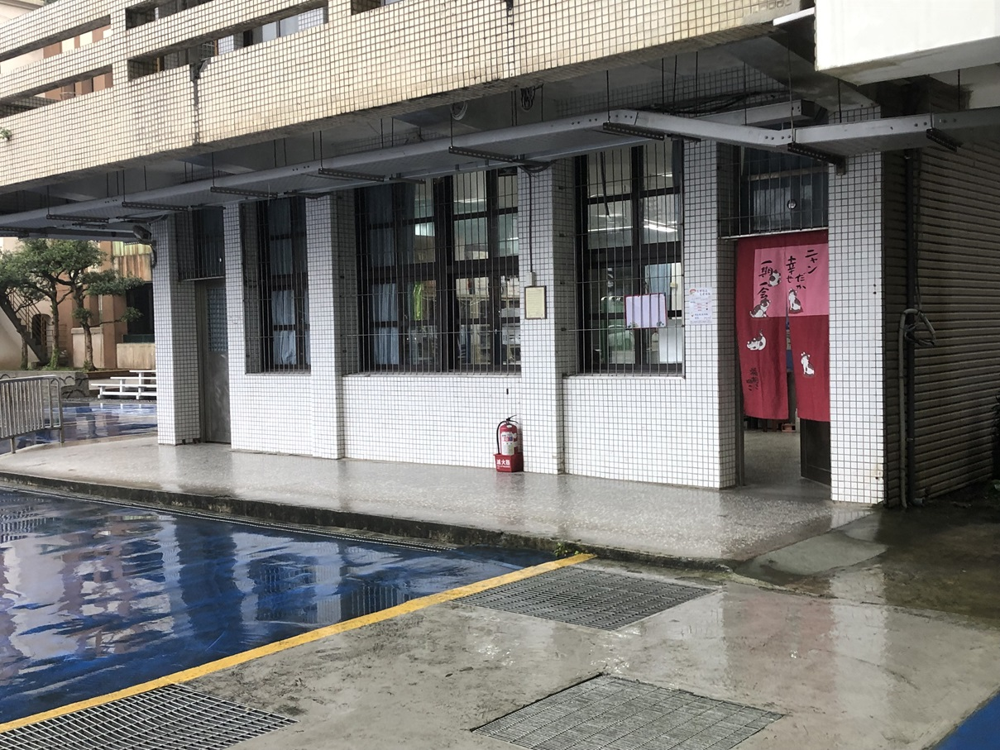

|
學務處:學務處位於尚志樓二樓，每天學務處都會傳來此起彼落的叫罵聲，雖然經過這裡會有種緊繃的感覺，但這樣的特色也成了另類的風景。 |
 |
操場:操場是大家運動的地方，每當下課或放學會有許多人到操場，有些人會在這裡打籃球，有人會在這裡打排球。 |
 |
圖書館:圖書館是大家讀書的地方，無論上下課都有很多同學在圖書館讀書。 |
 |
明星廣場:有很多同學會在下課時間和8、9節明星廣場打羽毛球。 |
 |
校長室:校長辦公、接待貴賓及處理公文的處室。 |
 |
合作社:很多同學一下課就衝去合作社買熱騰騰的煎餃、水餃或饅頭，別忘記配上一瓶冰涼的果汁或優酪乳，其實來杯牛奶也是不錯的選擇。 |
 |
保健室:學校的保健室相對於基隆的署基醫院，對於喜歡跑跑跳跳的同學急救中心不可或缺的。 |